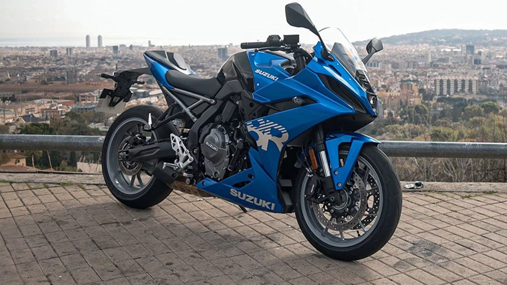
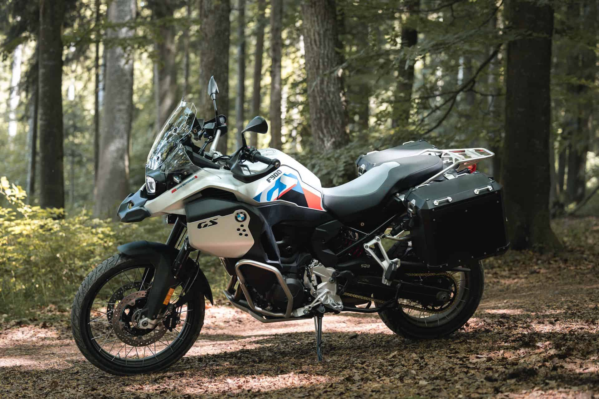
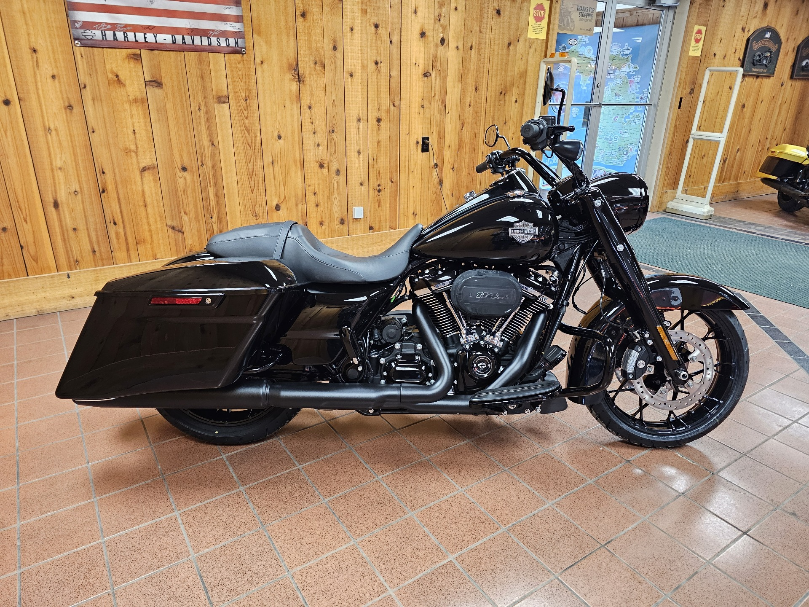
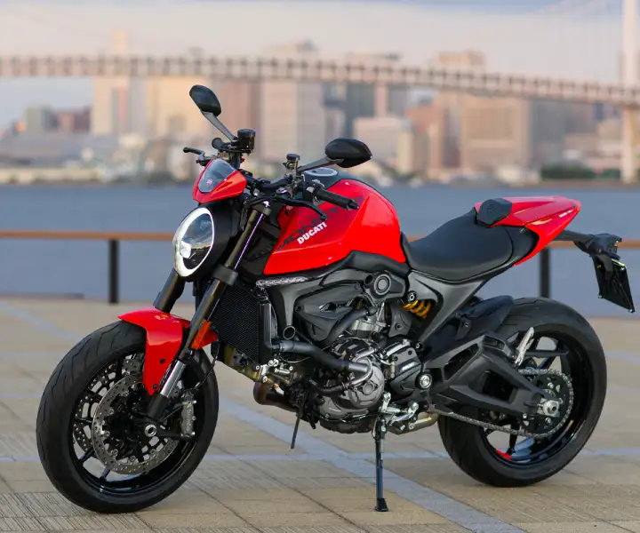

1. Honda CB1000R

Honda CB1000R არის თანამედროვე ნეიკედ მოტოციკლეტი, რომელიც აერთიანებს სპორტულ შესრულებას და კლასიკურ სტილს. მისი 998cc ძრავი უზრუნველყოფს ძლიერ აჩქარებას და გამორჩეულ მართვას.
2. Suzuki GSX-8R
Suzuki GSX-8R არის სპორტული ტიპის მოტოციკლეტი, რომელიც გამოირჩევა 776cc ძრავით, მაღალი მანევრირებადობით და თანამედროვე დიზაინით, შესაფერისი როგორც ქალაქის, ასევე ტრასის მგზავრობისთვის.
3. BMW F 900 GS
BMW F 900 GS არის adventure კლასის მოტოციკლეტი, შექმნილი ხანგრძლივი მოგზაურობებისთვის. აღჭურვილია 895cc ძრავით და მაღალი გამავლობის შესაძლებლობებით.
4. Harley-Davidson Road King Special
Harley-Davidson Road King Special არის კლასიკური ამერიკული კრუზერი. დიდძრავიანი, კომფორტული და მძლავრი, განკუთვნილია გრძელ მოგზაურობებზე თავისუფლების საჩუქრად.
5. Ducati Monster
Ducati Monster წარმოადგენს იტალიურ კლასიკას — მსუბუქი, სწრაფი და სტილური მოტოციკლეტი. 937cc ძრავი და სპორტული დინამიკა მას ერთ-ერთ ყველაზე პოპულარულ მოდელად აქცევს Ducati-ს ხაზში.